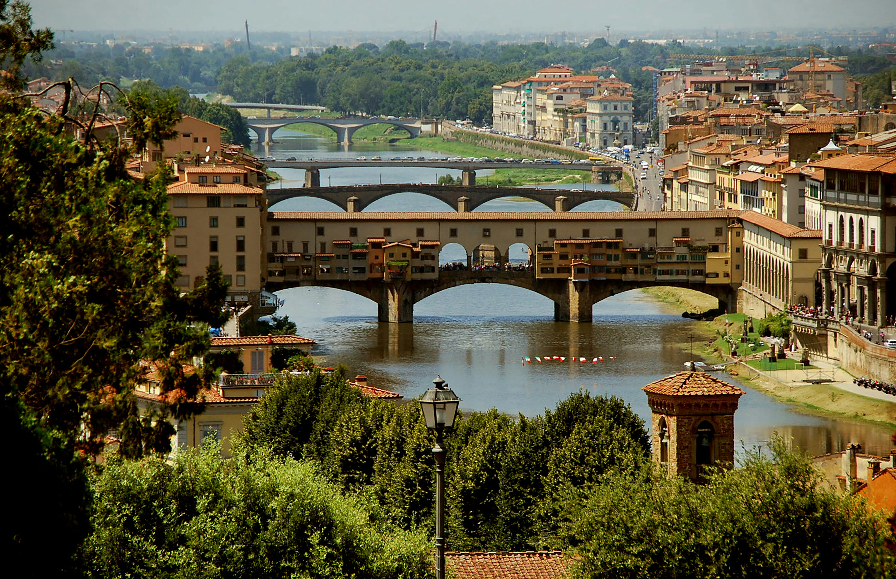
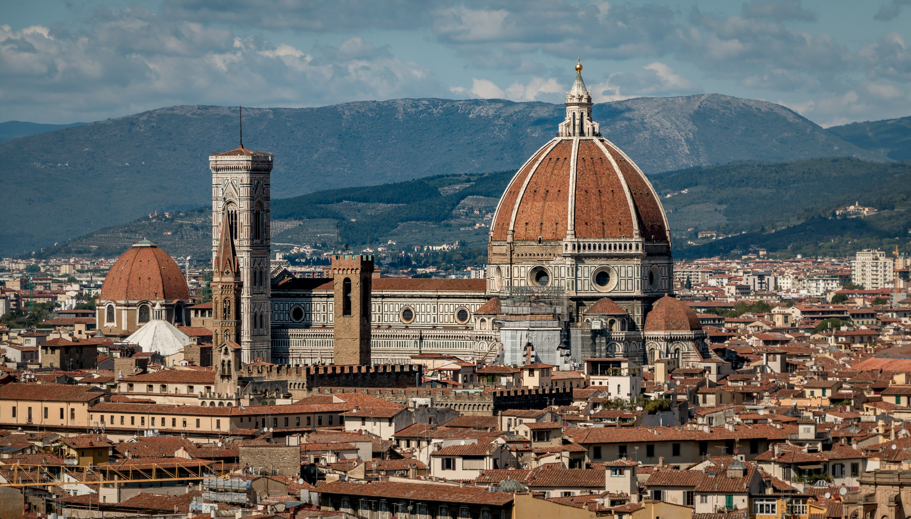

SUA PRÓXIMA VIAGEM:
Conheça Florença

Florença, capital da Toscana e "berço do Renascimento", é um dos maiores centros de arte e cultura do mundo. Fundada pelos romanos e influenciada pelos etruscos, a cidade floresceu sob a família Medici entre os séculos XV e XVI, tornando-se um epicentro de inovação artística e financeira.
PARA OS AMANTES DE HISTÓRIA
Descubra 3 destinos imperdíveis em Florença
Três destinos imperdíveis em Florença são a Catedral de Santa Maria del Fiore, a Galeria Uffizi e a Ponte Vecchio — cada um oferecendo uma experiência única de arte, história e arquitetura renascentistas.

1. Catedral de Santa Maria del Fiore
Além da cúpula projetada por Brunelleschi, sua fachada em mármore verde, branco e rosa impressiona visitantes. Subir até o topo oferece uma vista panorâmica inesquecível da cidade.
Bom para:
- História

2. Galeria Uffizi
Considerada um dos museus mais importantes do mundo, abriga obras-primas como O Nascimento de Vênus de Botticelli e pinturas de mestres como Rafael e Caravaggio. É parada obrigatória para amantes da arte.
Bom para:
- Arte

3. Ponte Vecchio
Única ponte medieval sobrevivente em Florença, famosa por suas joalherias e pelo corredor Vasari, que conecta o Palazzo Vecchio ao Palazzo Pitti. É um dos cartões-postais mais fotografados da cidade.
Bom para:
- Arquitetura